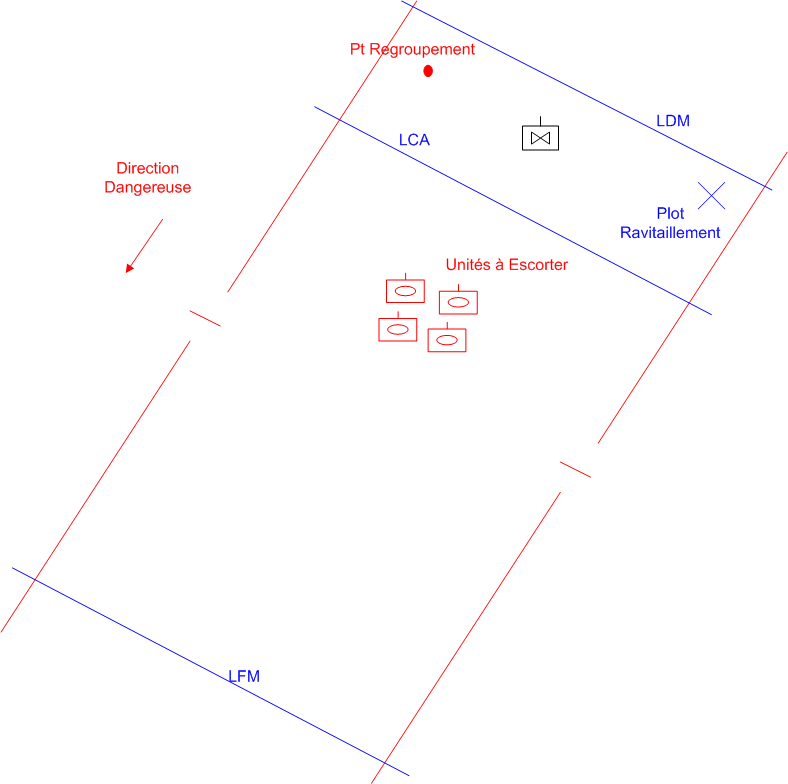

NIVEAU : Automate
ARME : ALAT
MISSION : Escorter
NIVEAU : Automate
ARME : ALAT
MISSION : Escorter
Schéma de modélisationEscorter |
Paramètres obligatoiresFuseau : Limite gauche / Limite droiteZone de responsabilité. Unités à escorter Les unités à escorter. Point de regroupement Le point à rejoindre en fin de mission. Cibles prioritaires Paramètre permettant de favoriser la prise à partie des unités en fonction de leurs types. Plots de ravitaillement Les plots passés en paramètre pouront être utilisés dans le cadre de la mission. Cette liste est automatiquement mise à jour avec les plots créés dans le fuseau de la mission. |
|
Paramètres optionnelsLimas [LDM/LFM] pour orienter le fuseauDirection Dangereuse : Orientation privilégiée des capteurs |
||
 |
Fiches missions |  |